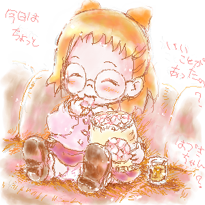

サイト全体をCSS(スタイルシート)化してみました～ｖ
どうでしょう、まだリンク先が改装中なページもありますが
メニューに画像を入れたり、多すぎるテキストを整理したり、
加えて左にバナーやお見せしたい画像を張り込んで楽しいページにと、
元の雰囲気は壊さずに、頑張ってみたつもりですー。
IE6とIE8で動作確認をして、IE6でもほぼ問題なく
表示されているのではないかと思います。
IE6では表示されませんが、上の■どれみ公式■と■ファンサイト■の
テキストにカーソルをあてると詳細リンク先が下に出てくるという
ややもしたらうざったいかもしれないCSS技術を使ってみたりしたので
ちょっと触ってみてくださいねｖ
学校でまだ習ってる途中の事も組み込みつつ、
今年中をメドにFireFoxやOperaでも動作チェックをして
とりあえずの改装完了をしようと思いますｖ
新年からは、まだずっといじってないモバイルページも
最近のケータイに合わせた、格好良く軽い
そんなのにしたいなぁ、と。
そんな、ちょっと調子づいてるけど
十分現実的な計画、頑張ってゆきたいです。
（更新日 09年12月13日SUN.）

もう２ヶ月近く前の写真ですが、学校の２階食堂に移りこんだ秋のうろこ雲がめっちゃ綺麗だったので
せっかく新しくしたケータイのパワー(笑)で風景を切り抜いてきました～ｖ
もうすっかり寒くなって、晴れの日は朝と夜が寒い、曇り雨風の日は日中寒いと
このころの心地よかった気候がもうすでに懐かしいですねぇ…
学校もあと１週間ちょっとで冬休み…
厳しい寒さは深まっていきますが、もうあと少し、頑張ってゆきたいです。
09年10月に撮った写真
（更新日 09年12月13日SUN.）
あけましておめでとうございます！
今RO(ラグナロクオンライン)に浮気ちうなのでまだ絵の更新は
大阪オフで描いたはづき絵スキャン待ちのみ！
で、本格的な更新はRO無料期間が終わる1/6日以降に！
それではまた会いしましょう～！
（更新日 09年1月4日SUN.）
{kind=link}
目の見えなくなってしまう人は目に見えて
命のなくなってしまう人は苦しみ耐えながら
その世界を終わらせていく
そんなでもこんなでもないが
今日で長かった僕の世界の終わり
ありがとうという気持ちでもなく
恨みを連ねるわけでもなく
さよならと言うでもなく
別に大げさなことではないですが
近所で見納めの、死にゆく今年の蛍を見ながら
そんな事を思いました

04年07月10日SAT.
今週に、北の閉鎖病棟から南の開放病棟へ移り、
デイケアという共同生活訓練みたいなのを受けつつ
院内生活、そろそろようやく退院まであと一歩という所です。
頑張れ私！（笑）
ナイショ２話も見られました。３話も見られるかも？
頑張れそうっ♪
第２話、おんぷとももことみんな、過去を掘り下げるお話ながらも
もっと、も～っとどれみ世界を広げていくような展開…
ナイショ２発目っ、よかったです～ｖ
そしてナイショED、
ひざまくら。さんも同意見ですかー；
ああ、言われてみれば動きのハジケっぷりが木星返りさんのそれ…(^^
あいちゃんとどれみちゃんの感じなんかすごい印象近いです～
むしろ自分にはエブプルさんのなよっとしたくずれおんぷちゃん＆
明後日の方向いてたりする止め絵が入る流れとかゆで小屋さんGIFアニメのMIX～
という印象でしたｗ
やぁやぁー私の一番はそれよりもっ
どれみちゃんのそばにいてずっと目をキラキラ（…ギラつかせている?ｗ）
うれしそうなはづきちゃん嬉しいｖ(*^^*)
夕焼けおわかれ悲しくなりそうなトコロで「じゃあ また明日」明るくっ♪
いいなぁ…ｖ ‥また明日ってお別れできる人がいるっていいな‥
04年07月10日SAT.


躁鬱の起伏をなだらかに、良い状態に持っていくためにただいま私、入院中です。
今日はネット上でこの事を御報告するためと家族と過ごす時間を作るための外出日(自宅へ)です。
本当はナイショをスカパ視聴されてる方と盛り上がりたかったですが、ままならず…
退院したときは多分DVD待ちの方と一緒にナイショでお話し出来るかも？
そのときはよろしくですｖ
04年06月26日SAT.
ナイショ、知り合いの家で観せてもらいました。ｱﾘｶﾞﾀｲｺﾄﾃﾞｽ(´｀)
一言だけ、
クオリティ素晴らしいです。
早く躁鬱の気を良くして、出来れば発売日に
DVDも買っていけるようになりたいと思えるナイショでした‥♪
がんばれそうｖ がんばる♪
（～DVD待ちの人への配慮のため、同日18:15頃に文章の一部を削除・修正前）
03年12月26日FRI.
１８きっぷとコミケカタログ(CD-ROM版)買ってきました～♪
どの電車に乗るかとか、経費どのくらいになるかとか、あとサークルチェック。
実際にこうして準備進めていくとなんかワクワクしてきますｖ
一般参加は初めてなんです。ひとりで電車に乗って行くのも初めて。
どんな経路がいいか、「あっこの日はこう乗ってここに泊まれば…♪」とか
なんか…楽しいんですね、こういうのって。
以前の…サークル参加してた時とかは、出発する直前まで全然気持ちに余裕なくて
こんな気持ちになること、ありませんでした。
初参加からずっとつづけてスペース当選という幸運に、参加を重ねるたび辛くなるばかりで…
…うん。ごめんなさい（＾＾；
ああ、なんかすごいぶりのコミケ。
上手く行けて、ずっと会ってみたかったひとたちと会えるといいなぁ。
03年12月11日THU.
HTMLじか打ちはやっぱりめんどくさい～(^^;
自由にレイアウトしたいけど、テーブルタグで
配置するとどこが何なのか分からなくなる；
ＨＰ作成ソフトをちょっと調べてみよう…
ポポロ、きれいって言われて嬉しい女の子、
照れながらの男の子、っていうの…きゃーｖ
初恋の時な自分が思い出されてどきどきでした（*＾＾*;）